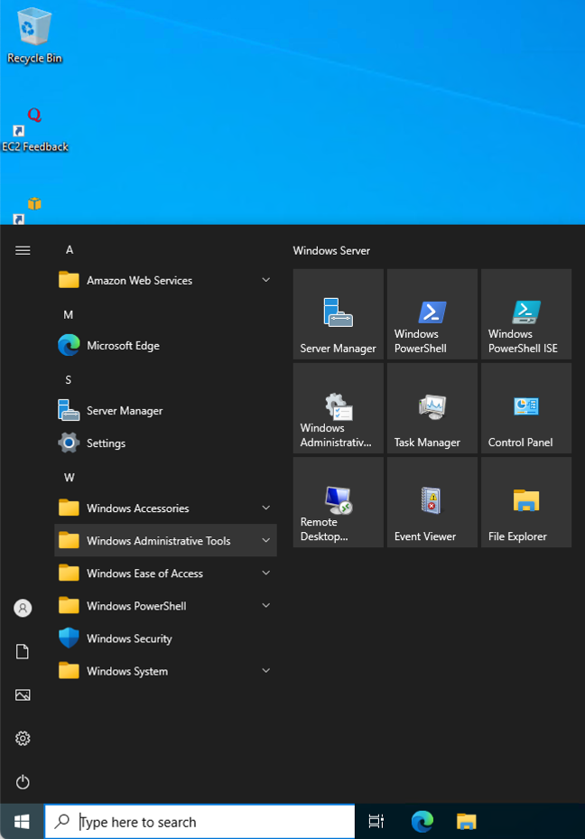
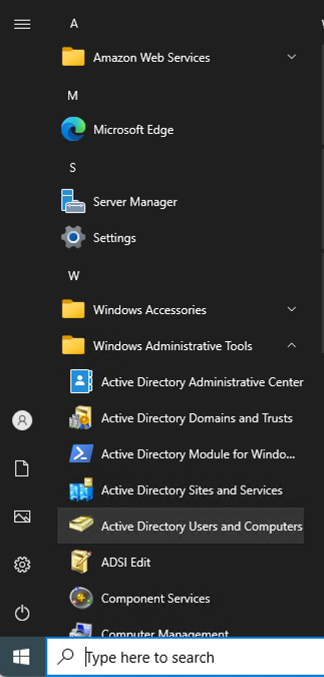
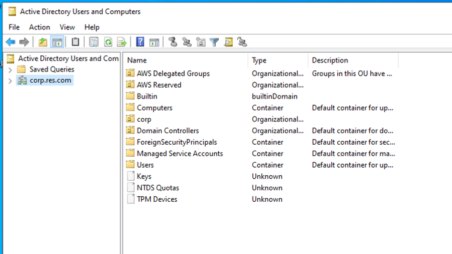
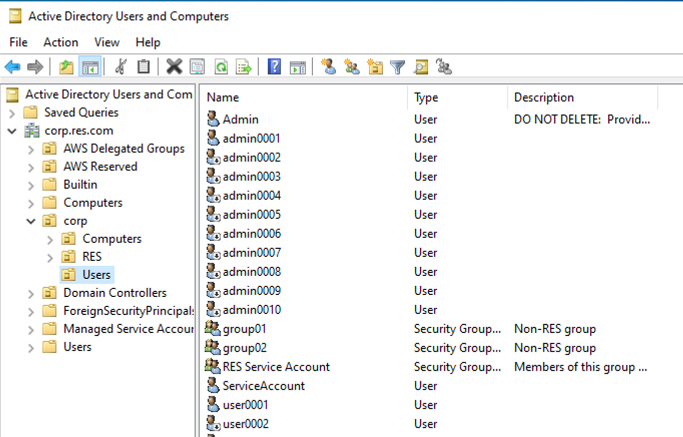
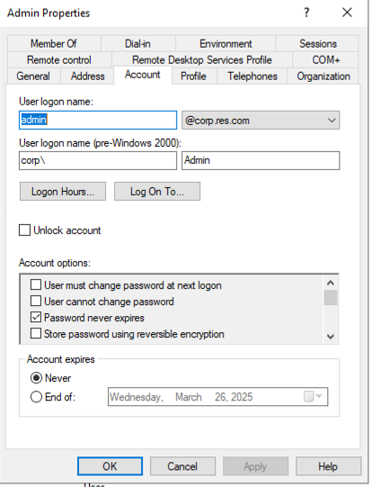
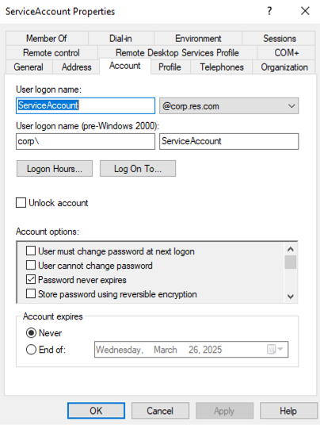

RES Integration
Research and Engineering Studio (RES) si an open source, easy-to-use web-based portal for administrators to create and manage secure cloud-based research and engineering environments. It enables users to self-provision virtual desktops. It currently doesn't have integrated support for an HPC cluster. We'll describe here how to integrate RES virtual desktops with one or more ParallelCluster clusters and use them from the RES desktops.
First you will need to deploy RES. The easiest way is to deploy the demo environment which provides all of the prerequisites and completely automates the deployment. If you want to use an existing VPC or Active Directory, then you will need to follow the instructions to deploy the product.
RES Setup
After you've deployed RES, you need to configure it so that the remote desktops can be used as external login nodes and so that they have access to any file systems that you created.
Onboard your file systems
RES natively supports EFS, FSx for NetApp Ontap, and FSx for Lustre file systems. It can create them for you or you can onboard existing file systems.
- Expand Environment Management
- Click File Systems
- Click Onboard File System or Create File System
Create RES Project
- Expand Environment Management
- Click Projects
- Click Create Project
- Fill in the required fields.
- Add any file systems that you created so they will be automatically mounted on the desktops that belong to the project.
- Expand Advanced Options under Resource Configurations and add the SlurmLoginNodeSG so that it will be attached automatically to the remote desktop so they can access the external file systems and slurm clusters.
- Add the groups and users that can use the project.
Give the project access to software stacks
Next, you'll need to give the project access to a Software Stack. You can either create a new Software Stack or update an existing one.
- Select Software Stacks under Session Management.
- Select an existing stack like the RHEL 8 stack
- Select Actions, Edit Stack.
- Select your project under Projects and enable it to use the stack.
Create virtual desktop
Now you can create a virtual desktop using the project that you just created.
- Select My Virtual Desktops under Desktops.
- Click Launch New Virtual Desktop
- Give it a descriptive name, select the project, operating system, and software stack.
- I suggest using a t3 instance for virtual desktops, such as a t3.large. If you need more cores or memory you will use your ParallelCluster compute nodes.
- I usually increase the storage size to 20GB so I can install additional packages.
- Click Submit and then wait for the desktop to be provisioned. You may need to refresh the page to update the desktop status.
You can switch to the EC2 console to verify that the instance has been launched and that it has the required security group attached.
ParallelCluster Configurattion
Integration with Research and Engineering Studion (RES) is straightforward.
You simply specify the --RESStackName option for the install.sh script or add the RESStackName configuration parameter
to your configuration file.
The install script will set the following configuration parameters based on your RES environment or check them if you have them set to make sure they are consistent
with your RES environment.
The intention is to completely automate the deployment of ParallelCluster and set up the RES environment so that it can easily be used.
| Parameter | Description | Value |
|---|---|---|
| VpcId | VPC id for the RES cluster | vpc-xxxxxx |
| SubnetId | Subnet in the RES VPC. | subnet-xxxxx |
| slurm/ExternalLoginNodes | Information of instances to be configured as external login nodes | |
| slurm/DomainJoinedInstance | Tags of cluster-manager which will be used to create users_groups.json | |
| slurm/storage/ExtraMounts | The mount parameters for the /home directory. This is required for access to the home directory. | |
| slurm/SlurmCtl/AdditionalSecurityGroups | Security group that allows access to EFS /home | |
| slurm/InstanceConfig/AdditionalSecurityGroups | Security group that allows access to EFS /home |
You must also create security groups as described in Security Groups for Login Nodes.
You must either specify AdditionalSecurityGroupsStackName or specify the SlurmHeadNodeSG in the slurm/SlurmCtl/AdditionalSecurityGroups parameter and the SlurmComputeNodeSG in the slurm/InstanceConfig/AdditionalSecurityGroups parameter.
When you specify RESStackName, a lambda function will run SSM commands to create a cron job on a RES domain joined instance to update the users_groups.json file every hour. Another lambda function will also automatically configure all running VDI hosts to use the cluster.
The following example shows the configuration parameters for a RES cluster with a stack named res-eda.
---
#====================================================================
# EDA Slurm cluster for RES using ParallelCluster
#
# Defaults and valid configuration options are in source/config_schema.py.
# Command line values override values in the config file.
#====================================================================
StackName: res-eda-pc-3-9-1-rhel8-x86-config
Region: <region>
SshKeyPair: <key-name>
AdditionalSecurityGroupsStackName: res-eda-SlurmSecurityGroups
RESStackName: res-eda
ErrorSnsTopicArn: <topic-arn>
TimeZone: 'US/Central'
slurm:
ParallelClusterConfig:
Version: '3.10.1'
Image:
Os: 'rhel8'
Architecture: 'x86_64'
Slurmdbd:
SlurmdbdStackName: pcluster-slurm-dbd-res-eda-3-10-1
SlurmCtl: {}
# Configure typical EDA instance types
# A partition will be created for each combination of Base OS, Architecture, and Spot
InstanceConfig:
UseSpot: true
NodeCounts:
DefaultMaxCount: 10
Connect to the virtual desktop
When the cluster deployment finishes you are ready to run jobs from your RES DCV desktop.
Create custom AMI for virtual desktops
Connect to your virtual desktop and install packages, software, configure ParallelCluster clusters, mount file systems, and whatever else you need for your project. You'll normally require root access to do this. When you are done, remove the following files or else new virtual desktops created from the image will fail to provision.
rm /root/bootstrap/semaphore/*.lock
Environment Password Management
The RES environment has 2 special AD users that it uses. The default AD password policy requires passwords to be changed every 30 days. If you don't change them, then the passwords will expire and the RES web portal will stop working. You can prevent this by manually resetting the passwords in AD or you can set the passwords for these 2 users to never expire.
The admin users are:
- Admin
- ServiceAccount
Their passwords are stored in Secrets Manager.
Make sure that you follow your company's security policies on how you manage these users' passwords.
Reset Admin User passwords
Retrieve the password for the user in Secrets Manager. Go to the AD console and reset the user's password using the same password. You can also update to a new password, save it in Secrets Manager, and then update the password in AD.
Change the Password Policy in AD
Use a Windows RDP client to connect to the AdDomainWindowsNode as the Admin user using the password from Secrets Manager.
Click the Windows start button and find the Windows Administrative tools.

Expand and double click on Active Directory Users and Computers.

Expand the corp.res.com.

Then expand corp and select Users.

Double click on the Admin user, select the Account tab, and check the box for "Password never expires". Click Apply and OK.

Do the same for the ServiceAccount user.

Log out and stop the AdDomainWindowsNode instance.